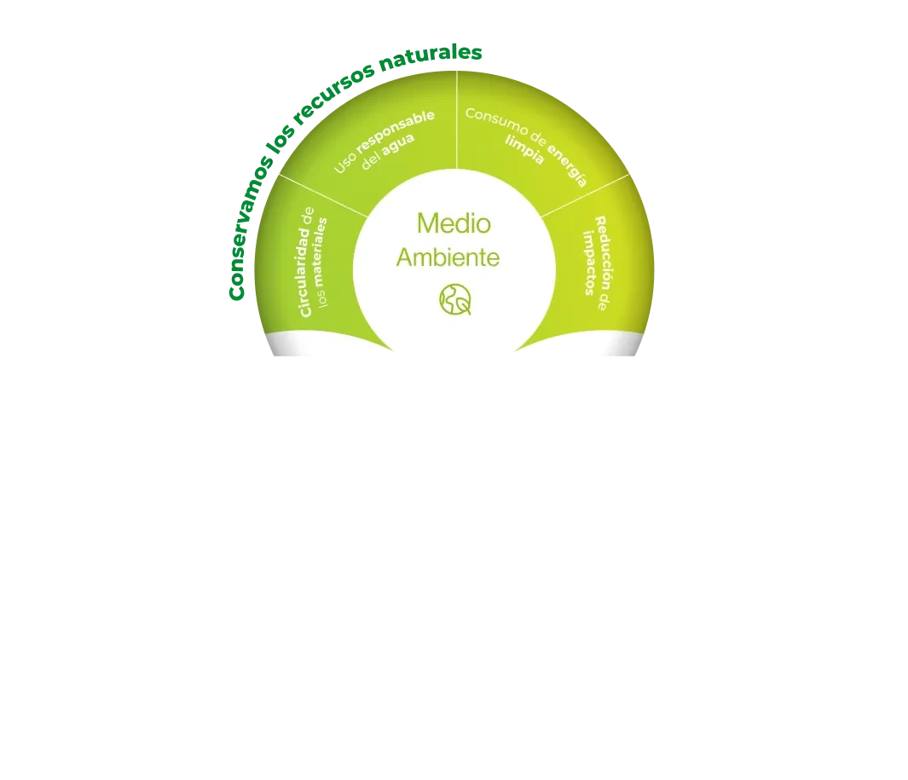
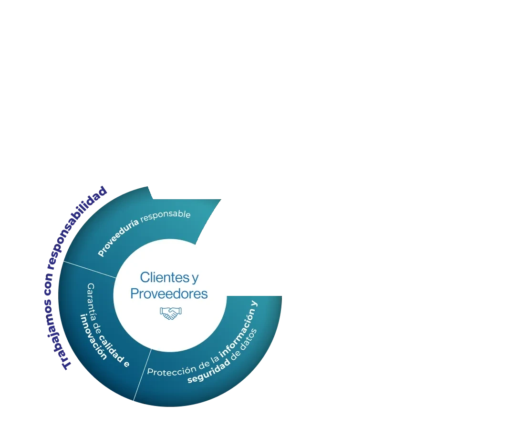
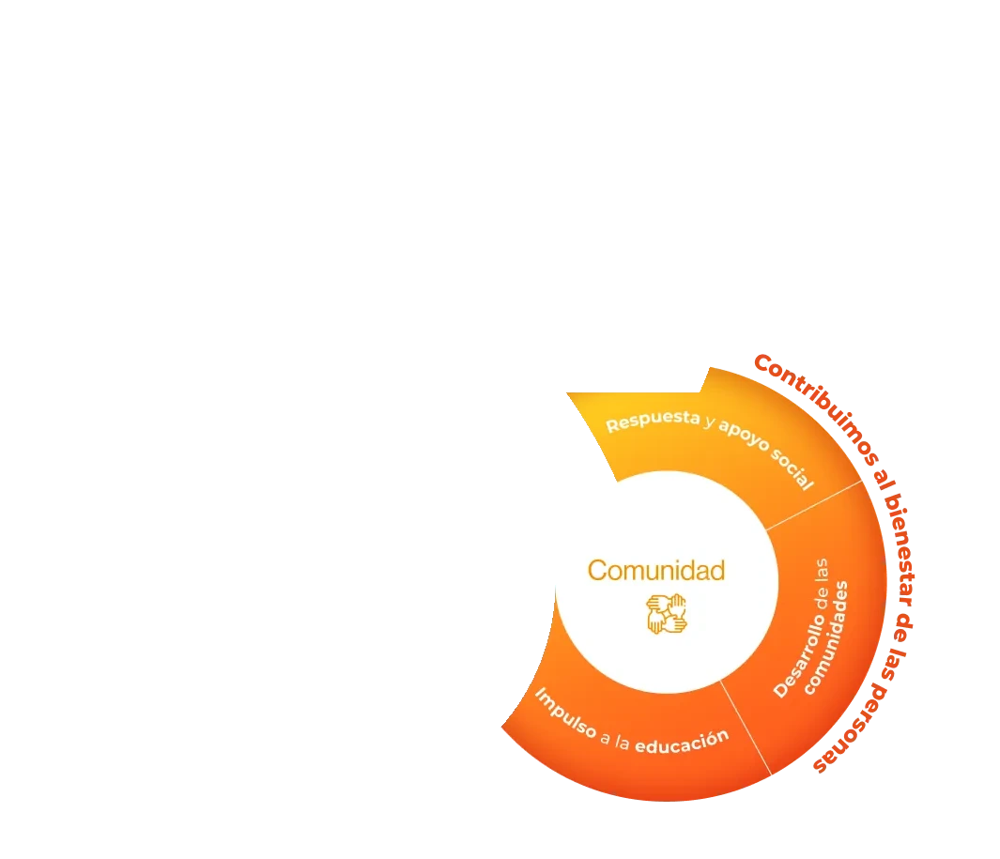
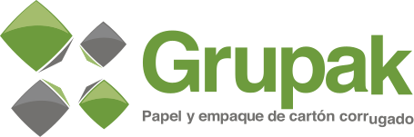

La estrategia de sustentabilidad está integrada por tres pilares que nos permiten avanzar con responsabilidad ambiental y social dentro de nuestras operaciones y con los diferentes grupos de interés.
La definición de esta estrategia, así como la gobernanza de los temas prioritarios, se establece desde la Alta Dirección y cuenta con la aprobación de la Presidencia del Consejo de Administración.
Para su construcción se consideran la estrategia general de la empresa y los resultados del estudio de doble materialidad. Su seguimiento se realiza a través del Comité de Sustentabilidad y las Comisiones, conformadas por colaboradores representantes de distintas áreas, divididas en:



